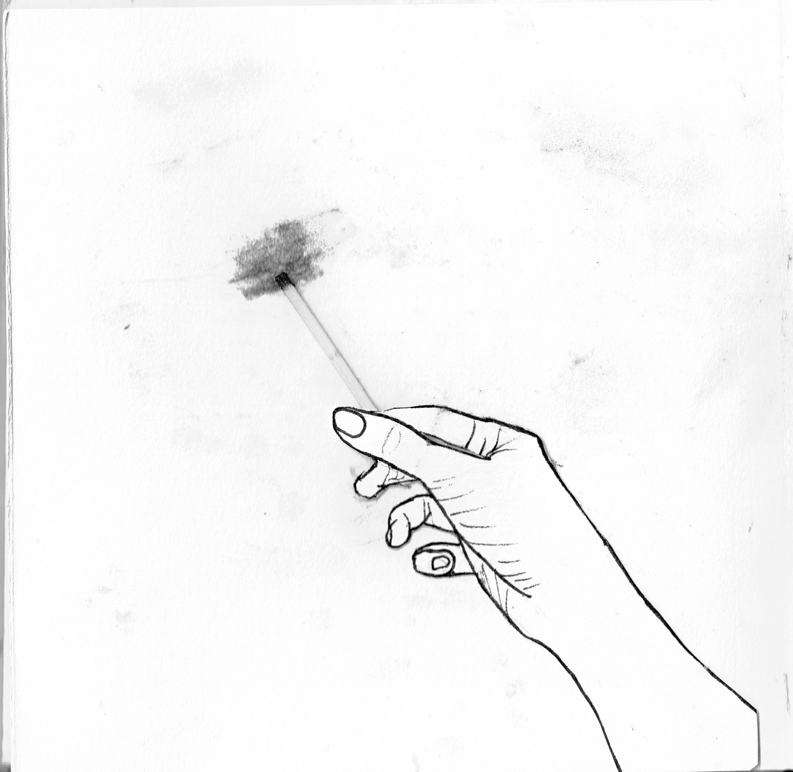
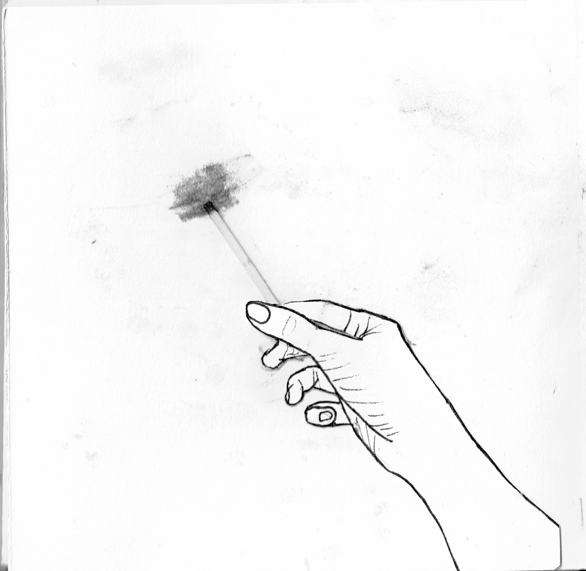

I like to think of myself as a visual storyteller. Creating books using paintings, images, and text allows me to tell stories from multiple points of view. Through my art I can provide the viewer with a way to gain insight into how another person thinks, feels, remembers or identifies. My books explore how people negotiate and make decisions in the face of time and change. The book form is in itself time-based, interactive, and physical thus, embodying the concepts I am addressing and ensuring the viewers’ engagement with it. The way I choose to tell the stories is where the art lies. My projects begin with my gathering personal narratives, either my own and other peoples. It is important that I present the voices of the people I write about without distorting, or altering their meaning. As with many artists, I’m a visual thinker, meaning I find that the power of words communicates better when they are connected with visual and sensorial experience. Images allow the text to become less literal, multi-dimensional, allowing for many possible meanings and interpretations. Patterns, materials, and color all help bring the text to life and allow the viewer to enter a multi-sensory experience of the content. Ultimately, I want people to look at my works and feel that they’ve become closer to the subject, by inspiring emotion and causing the viewer to find a piece of themselves within the work. In this way I hope to bridge the gap between the personal and the universal.

 
